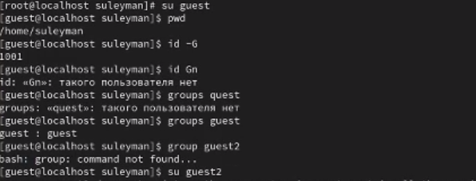
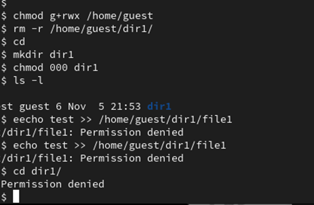

Цели и задачи работы
Цель лабораторной работы
Получение практических навыков работы в консоли с атрибутами файлов для групп пользователей.
Процесс выполнения лабораторной работы
Определяем UID и группу двух пользователей
Информация о пользователях
Файл с данными о пользователях
 Сожержимое файла /etc/group
Сожержимое файла /etc/group
Атрибуты директории
Снятие атрибутов с директории
Заполнение таблицы
Выводы по проделанной работе
Вывод
В ходе выполнения работы, мы смогли приобрести практические навыки работы в консоли с атрибутами файлов для групп пользователей.